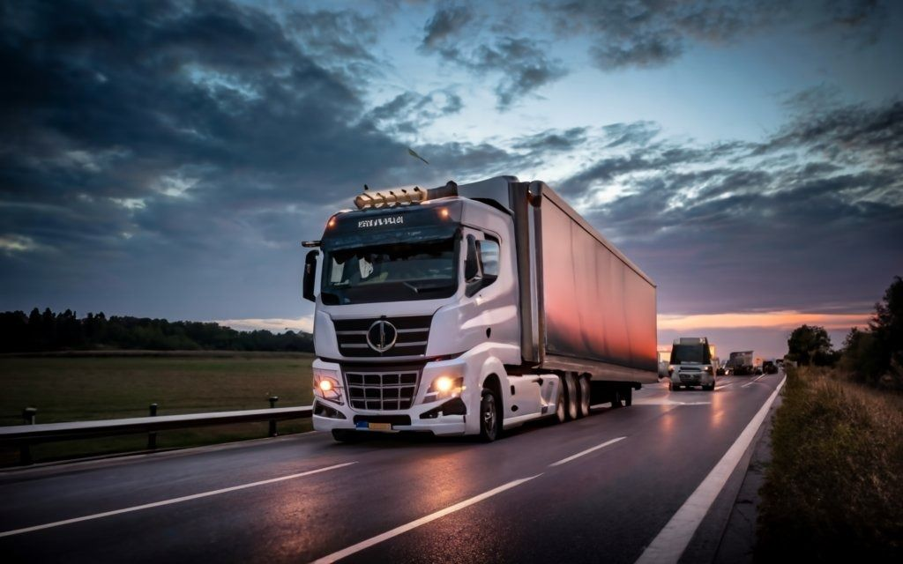
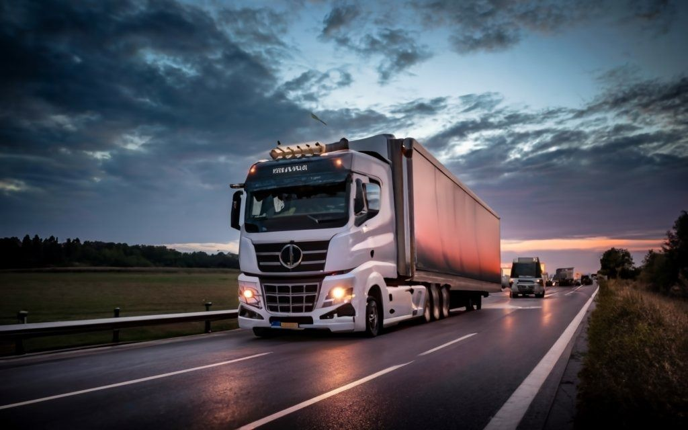

|
13 sierpnia 2017
Naszym zdaniem kluczowe znaczenie ma uświadomienie ludziom,
zarówno z branży transportowej,
jak i „z zewnątrz”, że transport drogowy jest siłą napędową gospodarki.
Bez sprawnego transportu miasto,
region, kraj czy nawet cały współczesny świat, nie jest w stanie
normalnie funkcjonować i nie ma absolutnie żadnych szans na rozwój.
Przypomnijmy sobie historię: Wszyscy starożytni zdobywcy
zaczynali od budowy dróg na nowych terytoriach,
aby zapewnić ciągłość dostaw (czyli transport) żywności i oręża dla swoich armii.
Miasta położone wzdłuż szlaków handlowych rozwijały się najszybciej.
Nawet złej sławy Hitler swój podbój Europy zaczął od budowy dróg.
Współcześnie każde dziecko, grając w dowolną grę określaną
jako „strategia gospodarcza” (a takich gier jest naprawdę ogromna ilość) wie,
że, żeby móc swoje społeczeństwo (plemię, nację, wioskę, krainę)
rozwinąć, to trzeba mu zapewnić głównie infrastrukturę transportową.
Czytaj więcej...
|
 
